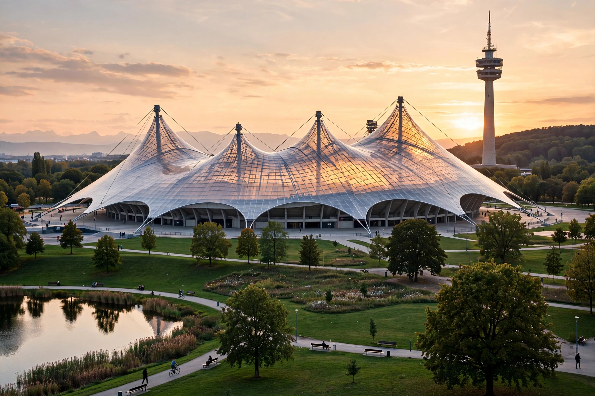

The Olympiastadion (German pronunciation: [ʔoˈlʏmpi̯aˌʃtaːdi̯ɔn]) is a stadium located in Munich, Germany. Situated in the Olympiapark in the northern borough of Milbertshofen-Am Hart, it was built as the main venue for the 1972 Summer Olympics. With its sweeping translucent tent-roof designed by Günther Behnisch and Frei Otto, it is regarded as a masterpiece of post-war German architecture and a national landmark.
| Olympiastadion München | |
|---|---|
 The stadium and its tent roof | |
| Location | Olympiapark, Munich, Germany |
| Capacity | 69,250 (current); 77,833 at the 1972 Olympics |
| Construction | 1968–1972 |
| Architects | Behnisch & Partner; Frei Otto (roof) |
| Former tenants | FC Bayern Munich (1972–2005), TSV 1860 Munich |
The stadium sits in a landscaped park built partly on the rubble of wartime Munich (the Olympiaberg is a rubble hill). Its acrylic-glass tent roof, suspended from masts by steel cables, was designed to evoke the Alps and to embody the open, democratic "cheerful Games" (heitere Spiele) concept — a deliberate contrast to the 1936 Berlin Olympics. The Games themselves were overshadowed by the Munich massacre, in which Palestinian terrorists killed eleven members of the Israeli team.
After 1972 the stadium hosted the 1974 FIFA World Cup Final (West Germany beat the Netherlands 2–1), the 1988 European Championship final, and three European Cup/Champions League finals (1979, 1993, 1997). It was the home of Bayern Munich until the club moved to the Allianz Arena in 2005, and also hosted 1860 Munich and, later, Türkgücü München.
Since the departure of professional football, the Olympiastadion has been used for concerts, athletics (it hosted the 2002 and 2022 European Athletics Championships events) and public events, and is a protected monument.